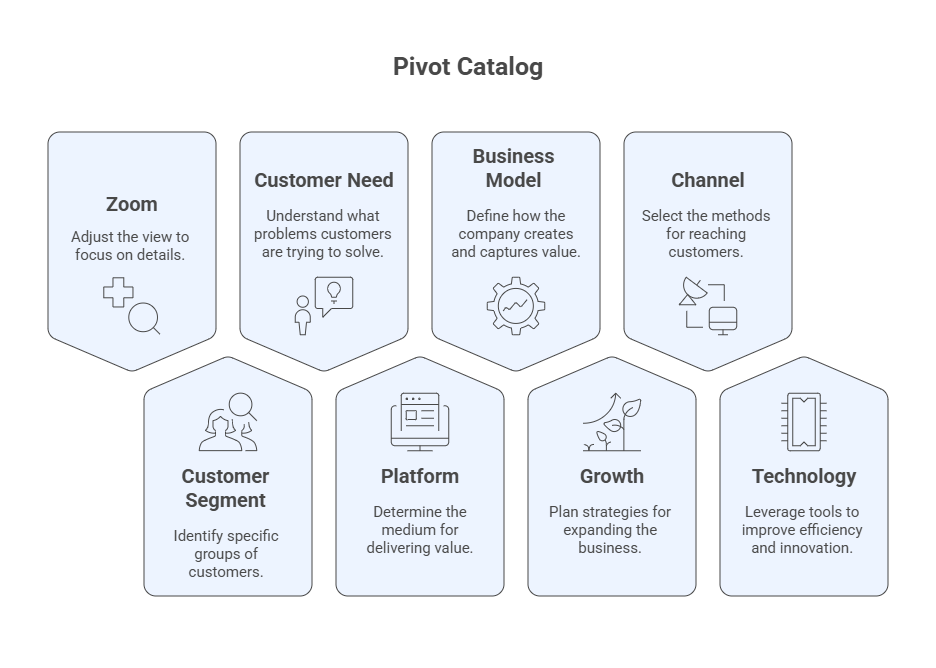
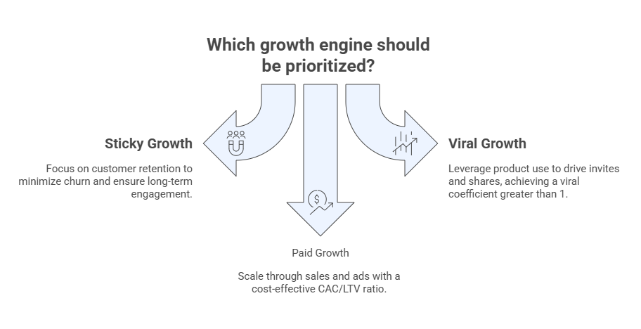

Topic 6: Lean Startup#
The Lean Startup is a scientific approach to building new products and services under conditions of extreme uncertainty. Grounded in Lean Thinking (eliminating waste and maximizing value), it replaces lengthy planning with rapid Build–Measure–Learn cycles that validate hypotheses with real customers. The goal is to discover what to build, something customers want and will pay for, in the shortest possible time and using the smallest amount of resources.
Suggested Readings#
Ries, E. (2011). The Lean Startup. Crown Currency.
Womack, J. P., & Jones, D. T. (2003). Lean Thinking: Banish Waste and Create Wealth in Your Corporation. Free Press.
Blank, S., & Dorf, B. (2012). The Startup Owner’s Manual. K & S Ranch.
6.1 Lean Thinking & Startups#
Lean Thinking aims to do more with less (less time, space, budget, and effort) while delivering exactly what customers want. Five guiding principles:
Define Value → from the customer’s perspective
Map the Value Stream
Create Flow
Establish Pull
Pursue Perfection
In startups, this translates into learning fast which activities create value and eliminating everything else (muda, waste).
What is a Startup?
“A human institution designed to create a new product or service under extreme uncertainty.”
Primary goal: discover, as fast as possible, what to build that customers want and will buy.
Core principles for startups:
Entrepreneurs are everywhere
Entrepreneurship is management
Validated learning
Build–Measure–Learn
Innovation accounting
6.2 The Build–Measure–Learn (B–M–L) Loop#
The Lean method is an iterative loop:
Build → turn hypotheses into an MVP
Measure → collect actionable, accessible, auditable metrics (avoid vanity metrics)
Learn → decide to persevere or pivot based on evidence
Use B–M–L to validate both the Value hypothesis (“do users get value?”) and the Growth hypothesis (“how do new users find it?”).
6.2.1 Build: Minimum Viable Product (MVP)#
An MVP is the smallest product experiment that enables a full B–M–L cycle with minimal cost and time. Forms include demo videos, concierge/Wizard-of-Oz services, clickable prototypes, spreadsheets, landing pages, etc. Classic examples (e.g., early Dropbox video) show how to validate demand before investing in full builds.
Real-World MVP Examples#
Below are concise examples of Minimum Viable Products (MVPs) that validated core hypotheses with minimal time and cost. Each entry highlights the MVP type, what was tested, and the signal that justified further investment.
1) Dropbox — Explainer Video MVP
Type: Video demo (no full product)
Tested: Do people want seamless file sync across devices?
Signal: Waitlist spikes and qualitative feedback from a short screencast validated demand before building complex sync tech.
2) Airbnb — Concierge MVP
Type: Manual service behind a simple website
Tested: Will travelers pay to stay in someone’s home, and will hosts list?
Signal: Founders personally photographed listings and messaged early guests/hosts; paid bookings validated the marketplace concept.
3) Zappos — Wizard-of-Oz MVP
Type: Fake-automation; manual order fulfillment
Tested: Will customers buy shoes online without trying them?
Signal: Founder posted local store photos online; when an order arrived, he bought at retail and shipped—real purchases proved demand.
4) Buffer — Landing Page + Pricing Smoke Test
Type: Landing pages with “plans” and an email capture
Tested: Will users pay for scheduled social posts, and at what price points?
Signal: Click-throughs on pricing tiers and email signups quantified willingness to pay before building.
5) Uber (UberCab) — Single-Neighborhood Pilot
Type: Tiny, geo-fenced launch with a handful of cars
Tested: Will people tap a phone to hail a black car and accept dynamic ETAs?
Signal: Repeat rides and word-of-mouth within San Francisco validated the core experience.
6) Groupon — Blog + PDF Coupons
Type: WordPress site; manually generated coupons (PDFs)
Tested: Will collective discounts drive enough buyer interest to close deals?
Signal: Daily redemptions and merchant signups demonstrated traction without a full platform.
7) DoorDash (PaloAltoDelivery) — Scrappy Local Delivery
Type: Simple site listing menus; founders doing deliveries
Tested: Do local restaurants and customers want third-party delivery?
Signal: Orders via a basic form and phone calls showed real demand; operational pain points informed the product.
8) Pebble — Crowdfunding Pre-Orders
Type: Kickstarter campaign with prototype visuals/specs
Tested: Will customers pre-pay for a customizable smartwatch?
Signal: Massive pre-orders derisked manufacturing and validated early adopter demand.
9) Morning Brew — Email Newsletter MVP
Type: Daily email curated by founders (no app)
Tested: Will busy readers subscribe and engage with concise business news?
Signal: Rapid list growth and open rates validated product–market fit for content and tone.
10) Spotify (early US launch) — Limited-Access Beta
Type: Invite-only desktop app with core streaming working
Tested: Does near-instant playback change music habits and retention?
Signal: High session time, playlist creation, and referrals inside a small cohort justified licensing and scale-up.
11) Figma — Private Beta with Browser Tech
Type: Restricted-access design editor in the browser
Tested: Can a web-first collaborative editor meet performance/UX needs of designers?
Signal: Power-user feedback on multi-cursor editing and low-latency interactions validated the technical bet.
12) Amazon Prime — Offer & Cohort MVP
Type: Soft launch of membership benefits to a subset of users
Tested: Will flat-fee fast shipping drive higher frequency and basket size?
Signal: Cohort lifts in repeat purchase and annual value validated the subscription economics.
How to Choose Your MVP Type#
Explainer/landing page when the core risk is demand.
Concierge/Wizard-of-Oz when the core risk is experience or workflow fit.
Geo-fenced/pilot when the core risk is operations or supply.
Pre-orders/crowdfunding when the core risk is willingness to pay and unit economics.
Private beta when the core risk is technical feasibility and usability.
Aim for the smallest experiment that lets you run a full Build–Measure–Learn cycle in days or weeks—not months.
6.2.2 Measure: Innovation Accounting & Metrics (AARRR)#
To know if you are making real progress, use innovation accounting:
AARRR funnel: Acquisition → Activation → Retention → Referral → Revenue
Metric properties: Actionable (clear cause–effect), Accessible (simple, concrete), Auditable (verifiable)
Prefer cohort analysis (behavior over time by signup batch) to vanity metrics
Cohort sketch
Cohort (Week) |
Users |
D+1 |
D+7 |
D+14 |
D+28 |
|---|---|---|---|---|---|
W1 |
120 |
42% |
25% |
17% |
10% |
W2 |
… |
… |
… |
… |
… |
Innovation Accounting — Real-World Examples#
Below are concrete examples of actionable, accessible, auditable metrics and decision rules that teams used to drive learning and growth.
1) Slack — “2,000 Messages” Activation Threshold
Metric: Cumulative messages exchanged by a team.
Why it works: Slack found that teams crossing ~2,000 messages had meaningfully “tried” the product and were likely to stick — a clear activation milestone to guide experiments, onboarding, and sales assists.
2) Airbnb — “Nights Booked” as the North Star
Metric: Number of nights booked.
Why it works: Directly reflects value created for both sides of the marketplace and ties closely to revenue; used as a top-level North Star to align product and growth work.
3) Dropbox — Referral Loop & K-Factor
Metric: Referral-driven signups per user, tracked to a viral growth rate (k-factor) and cohort lifts.
Why it works: The team instrumented referrals (extra storage) and measured invite conversion — the program is credited with ~3,900% user growth in 15 months.
4) Duolingo — DAU/MAU & State-Transition Growth Model
Metric: DAU/MAU engagement plus a growth model that tracks daily transitions between user activity states to pinpoint where to intervene.
Why it works: Breaks a headline metric into auditable sub-rates (e.g., reactivation, resurrection) and lets teams attribute changes to specific product experiments. Duolingo also reports DAU/MAU in investor updates.
5) Facebook — DAU/MAU “Stickiness”
Metric: DAU/MAU ratio as a simple, comparable engagement indicator.
Why it works: Actionable for product teams (improve daily habits) and auditable in analytics; widely adopted as a benchmark for social/consumer apps.
6) Superhuman — 40% “Very Disappointed” PMF Survey
Metric: % of surveyed users who would be “very disappointed” if they could no longer use the product (Sean Ellis test).
Decision rule: ≥40% indicates initial product/market fit; <40% → iterate on who loves you and why before scaling. Superhuman operationalized this into an ongoing engine.
7) Netflix — Retention by Cohort
Metric: Temporal cohort retention (triangle tables), tracked by signup month and content exposure.
Why it works: Separates acquisition spikes from true retention; helps attribute retention changes to content drops or UX changes. (Netflix has publicly discussed cohort analysis approaches.)
8) Zoom/Calendar-Style Collaboration — Viral Invitations → Activation
Metric: Invite → install → first-use funnel from meeting links (viral coefficient, time-to-invite, invitee activation).
Why it works: Measures product-inherent virality (every host brings guests) and ties it to auditable conversion events — a classic growth hypothesis loop used by collaborative tools. (Industry analyses commonly cite these as core viral metrics.)
How to Apply These in Your Startup#
Pick one “North Star” that best captures delivered value (e.g., nights booked, tasks completed).
Define one primary metric per AARRR stage and make each actionable, accessible, auditable.
Add a clear decision rule (e.g., “pivot review if D30 retention <10% for two cohorts”).
Cohort everything — measure changes over time by acquisition week/month to see real learning (not vanity spikes). :contentReference[oaicite:8]{index=8}
6.2.3 Learn: Persevere or Pivot#
Validated learning is the empirical proof you have learned something true about customers. When learning plateaus or usage declines, consider a pivot (a structured course correction) to test a new hypothesis (product, strategy, or growth engine). Reassess on a cadence (e.g., every 2–4 months).
Pivot catalog:
Zoom-in/Zoom-out
Customer Segment
Customer Need
Platform
Business Model
Growth
Channel
Technology

Pivot Catalog — Real-World Examples#
Below are eight classic pivot types from Lean Startup, each paired with a concrete company example.
1) Zoom-In Pivot
Definition: A single feature becomes the whole product.
Example: Instagram — Focused Burbn down to photo capture + filters + social sharing.
What changed: Narrowed the scope to the one feature users loved; killed the rest.
2) Zoom-Out Pivot
Definition: The original product becomes one feature of a larger suite.
Example: HubSpot — Expanded from a marketing tool into a full CRM and RevOps platform.
What changed: Broadened scope to include sales, service, and ops around the core marketing feature.
3) Customer Segment Pivot
Definition: Same product core, different primary users.
Example: Slack — Repurposed an internal team chat tool (from a failed game project) for organizations.
What changed: Target customer moved from a game studio’s internal use to teams and enterprises.
4) Customer Need Pivot
Definition: Address a different problem for (often) similar users.
Example: YouTube — Shifted from video dating (“Tune In, Hook Up”) to open video sharing for everyone.
What changed: The core job-to-be-done changed from dating to broad media hosting/sharing.
5) Platform Pivot
Definition: Move from an application to a platform (or vice-versa).
Example: Shopify — From a snowboard e-shop (Snowdevil) to a platform enabling any merchant to sell online.
What changed: Built tools + APIs for others, not just a single storefront.
6) Business Model Pivot
Definition: Change how value is captured (pricing, packaging, revenue model).
Example: Adobe — From perpetual licenses (Creative Suite) to subscriptions (Creative Cloud).
What changed: Revenue shifted to recurring; lowered upfront price, increased LTV and update cadence.
7) Channel Pivot
Definition: Switch the main distribution/sales channel.
Example: Nike — Tilted from wholesale-heavy to direct-to-consumer (DTC), then evolved to a blended channel strategy with select retail partners.
What changed: Go-to-market emphasis and partner mix; invested in owned stores/apps.
8) Technology Pivot
Definition: Solve the same problem with a different technology engine.
Example: PayPal — From PalmPilot “beaming” payments to email/web-based payments.
What changed: Core delivery tech moved to the web, unlocking scale and adoption.
6.3 Engines of Growth#
Choose and instrument one primary engine at a time:
Sticky: focus on retention/return use (minimize churn).
Viral: product use drives invites/shares (viral coefficient > 1).
Paid: CAC < LTV via sales/ads; scale with positive unit economics.

6.4 Tools & Templates#
6.4.1 MVP Experiment Card#
Hypothesis (Value/Growth):
MVP type: (landing page / clickable prototype / concierge / demo video / email test)
Who (segment):
What happens (procedure):
Primary metric & threshold:
Time window:
Decision rule: persevere / pivot candidate / follow-up test
6.4.2 AARRR Plan (one line each)#
Acquisition: channel + qualifying event
Activation: “good first experience” definition
Retention: return criterion & window
Referral: built-in invite or incentive
Revenue: pricing unit & leading indicator
6.4.3 Kanban for Validated Learning#
Columns: Backlog → In Progress → Done → Validated with Work in Progrsss (WIP) limits. Prioritize items that maximize learning per unit time.

6.5 Worked Examples (Topic 5 Cases)#
Below are end-to-end Lean Startup examples for the two Topic 5 cases:
AI Personal Health Companion
AI-Powered Language Tutor for Immigrants
Each case includes: Lean Principles Cycle → B-M-L Loop → AARRR & Cohorts → Possible Pivots → Engines of Growth → Kanban.
Case A — AI Personal Health Companion#
A.1 Lean Principles Cycle (Value → Flow → Pull → Perfection)#
Define Value (Customer’s view)
Value = plain-language, timely insights that reduce anxiety and help follow care plans.
Top “jobs”: track vitals; understand anomalies; follow doctor plan.
Map Value Stream
Data intake (wearables/EHR) → Insight generation (rules/LLM) → Delivery (mobile cards/SMS) → User action (acknowledge/save) → Outcome (adherence, reduced anxiety).
Create Flow
Batch nightly → switch to event-triggered “insight cards” to shorten time-to-value (< 5 min from reading to nudge).
Establish Pull
Users subscribe to specific concerns (e.g., glucose spikes).
Only push insights when thresholds/metaconditions met (avoid notification fatigue).
Pursue Perfection
Weekly defect review: % irrelevant insights, % late notifications.
Kaizen: prune rules, refine language, personalize timing windows.
A.2 Build–Measure–Learn (B-M-L) Loop#
Leap-of-Faith (Value)
Hypothesis: “Plain-language insight cards increase activation to ≥ 30% in 7 days.”
Build (MVP)
Wizard-of-Oz: clinician/analyst curates daily SMS/email “insight cards” for a 50-user waitlist.
Measure (Actionable metric)
Activation: open ≥3 insights + save ≥1 card within 7 days.
Learn (Decision rule)
If Activation ≥ 30% → persevere: build lightweight in-app insights.
If < 20% → test Customer Need pivot (timing vs. content; anxiety vs. adherence focus).
A.3 AARRR Metrics & Cohort Table#
AARRR Plan
Stage |
Metric (Definition) |
Target |
Instrumentation |
|---|---|---|---|
Acquisition |
LP signup rate (% unique visitors → email) |
≥ 12% |
LP analytics + unique email capture |
Activation |
% who open ≥3 insights + save ≥1 card (7d) |
≥ 30% |
Event logs (open/save) |
Retention |
D+7/D+28 return to view insights |
D+7 ≥ 25%, D+28 ≥ 12% |
Cohort tracking |
Referral |
Avg invites per user × invite CVR (K) |
K ≥ 0.25 |
Invite links + attribution |
Revenue |
Trial→paid conversion (30d) |
≥ 8% |
Billing events |
Cohort Sketch (Activation & Retention)
Cohort (Week) |
Users |
Activation (7d) |
D+7 Retention |
D+28 Retention |
|---|---|---|---|---|
W1 |
50 |
34% |
26% |
12% |
W2 |
65 |
31% |
24% |
11% |
W3 |
80 |
29% |
22% |
10% |
A.4 Possible Pivots (Triggers & Actions)#
Pivot Type |
Trigger (Signal) |
Action |
|---|---|---|
Customer Need |
Activation ≥ 30% but D+28 < 10% |
Shift focus: medication reminders → clinician Q&A “micro-explanations” |
Zoom-In |
70% of usage on “trend explanation” feature |
Make “trend cards” the core product; remove low-use modules |
Channel |
CAC volatile; payback > 6 months |
Test provider referral channel (clinics bundle app) |
Business Model |
High use, low conversion |
Introduce family plan + clinician dashboard upsell |
A.5 Engines of Growth (Choice & Next Experiment)#
Sticky (recommended first): build retention via timely, high-relevance insights.
Next test: notification timing personalization A/B; target +3–5pp D+7.
Viral: caregiver sharing; “Share insight with family/doctor.”
Next test: 1-click share; measure K-factor change (baseline ~0.1 → goal 0.2–0.25).
Paid: employer/insurer B2B2C; CAC via brokers.
Next test: pilot with small clinic; track CAC, payback.
A.6 Kanban (2-Week Sprint)#
Backlog |
In Progress (WIP ≤ 3) |
Done |
Validated |
|---|---|---|---|
- Personalize send-time model |
- Event logging for “save/share” |
- Cohort pipeline v1 |
- Activation metric definition (auditable) |
Daily stand-up script: Yesterday/Today/Blockers, confirm WIP limits, review single “learning goal” for the day.
Case B — AI-Powered Language Tutor for Immigrants#
B.1 Lean Principles Cycle#
Define Value
Value = low-anxiety, job-relevant speaking practice available on-demand.
Map Value Stream
Topic selection → Conversational role-play → Real-time feedback → Micro-goals → Progress badges.
Create Flow
Remove sign-up friction; “Practice now” in 2 taps; cached offline lessons.
Establish Pull
Learners pick contexts (work, healthcare, school); app adapts vocabulary to goals.
Pursue Perfection
Track correction usefulness rating; reduce latency in speech feedback.
B.2 Build–Measure–Learn (B-M-L) Loop#
Leap-of-Faith (Value)
Hypothesis: “Contextual role-plays reduce speaking anxiety and raise activation to ≥ 40% in 7 days.”
Build (MVP)
Clickable prototype + scripted role-play via human moderator (Wizard-of-Oz) in messaging app.
Measure
Activation: complete ≥2 role-plays + accept ≥1 correction in 7 days.
Learn
If Activation ≥ 40% → persevere; build automated role-play with ASR feedback.
If < 25% → test Customer Segment pivot (job seekers vs. newcomers vs. students).
B.3 AARRR Metrics & Cohort Table#
AARRR Plan
Stage |
Metric (Definition) |
Target |
Instrumentation |
|---|---|---|---|
Acquisition |
% visitors starting a “Practice now” session |
≥ 15% |
LP → app deep-link |
Activation |
≥2 role-plays + ≥1 accepted correction (7d) |
≥ 40% |
Session & feedback logs |
Retention |
Weekly active learners (WAU/Users by cohort) |
W2 ≥ 35%, W4 ≥ 20% |
Cohort tracking |
Referral |
Avg invites per learner × CVR |
K ≥ 0.3 |
Invite links |
Revenue |
Course pack purchase (30d) |
≥ 6% |
Billing events |
Cohort Sketch (Activation & Retention)
Cohort (Week) |
Users |
Activation (7d) |
W2 Retention |
W4 Retention |
|---|---|---|---|---|
W1 |
100 |
43% |
36% |
21% |
W2 |
120 |
39% |
33% |
19% |
W3 |
140 |
41% |
35% |
20% |
B.4 Possible Pivots#
Pivot Type |
Trigger (Signal) |
Action |
|---|---|---|
Customer Segment |
Activation students 48% vs. job seekers 28% |
Narrow ICP to students; tailor scenarios & pricing |
Zoom-In |
75% usage on “job interview coach” |
Make interview coach the product; deprecate generic lessons |
Channel |
Organic stalls; schools request bulk codes |
Partner with community colleges/NGOs for cohort onboarding |
Pricing/Model |
High retention, low purchase |
Freemium minutes + paid “coach review” packs |
B.5 Engines of Growth#
Viral (recommended first): peer challenges, teacher cohorts.
Next test: “Invite a partner” role-play; measure K from 0.25 → 0.4.
Sticky: streaks, progress badges, job-specific goals.
Next test: micro-goals with weekly review; target W2 +3pp.
Paid: school licenses; recruiter bundles.
Next test: NGO pilot; track CAC, conversion to site licenses.
B.6 Kanban (2-Week Sprint)#
Backlog |
In Progress (WIP ≤ 3) |
Done |
Validated |
|---|---|---|---|
- “Practice now” single-tap entry |
- Partner invite links + attribution |
- Onboarding text rewrite |
- Activation metric (auditable) |
Daily stand-up script: confirm one learning objective per day, check experiment health (exposure, power), unblock critical path tasks.
Quick Cross-Case Reference#
Element |
Health Companion |
Language Tutor |
|---|---|---|
Value Hypothesis |
Insight cards reduce anxiety → activation ≥ 30% |
Role-plays reduce anxiety → activation ≥ 40% |
Primary Engine (start) |
Sticky (timely insights) |
Viral (peer/teacher loops) |
Early Pivot Watch |
Need vs. timing; zoom-in on trend cards |
Segment focus (students), zoom-in on interview coach |
North-Star Early |
D+7 retention |
Weekly active learners (WAU/Cohort) |
6.6 AI-Assisted Practice Prompts#
Prompt — LoF & MVP Design
You are my Lean Startup coach. Given the startup context below, list our top 3 Leap-of-Faith assumptions (clearly label Value vs Growth), propose 2–3 scrappy MVP experiments to test the Value hypothesis in ≤7 days, and define one actionable metric + success threshold for each. Outline risks/biases and how to minimize them.
Context: [paste idea, target user, problem]
Prompt — Metrics & AARRR
Design an AARRR plan for our MVP: specify one actionable, accessible, auditable metric per stage with operational definitions, a logging plan, and a 2-week cohort table template I can fill out.
Prompt — Persevere vs Pivot
Using our latest cohort metrics (below), assess whether to persevere or pivot. If pivoting, recommend the best pivot type and justify with evidence. Provide a 2-week action plan.
Data: [activation/retention/referral/revenue]
Prompt — Choose a Growth Engine
Evaluate sticky vs viral vs paid growth for our product. Estimate simple unit economics (assume values if missing), identify the limiting constraint, and propose the next experiment to validate the chosen engine.
Prompt — Learning Kanban
Create a 2-week Lean Kanban with 8–12 items across Backlog / In Progress / Done / Validated, prioritizing experiments that maximize learning per unit time. Include a daily stand-up script and WIP limits.
CW 6.1 In-Class Activities#
Objective: Turn your idea into a week-long learning plan.
MVP Experiment Card (one page)
AARRR Plan (one page)
Cohort Table (skeleton with target thresholds)
Submission: 2 pages (PDF) per team. In class share-outs for feedback.
HW 6.1 Homework#
For your STARTUP, prepare one complete MVP: define the hypotheses, MVP, evaluation metrics, and discuss pivot vs persevere conditions. Deliver as a 2–3 page brief.
Rubric (10 pts)
Clear LoF & hypotheses (2)
MVP feasibility in ≤7 days (2)
Metrics (AARRR) & thresholds (3)
Decision rules & next steps (2)
Clarity & formatting (1)
Final Deliverables (Upload to Canvas)#
HW 6.1: One MVP brief (PDF, 2–3 pages).